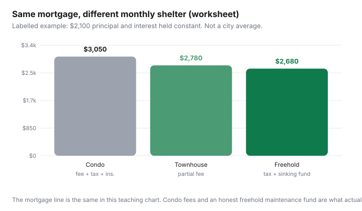

Housing · Canada
Condo vs freehold monthly costs in Canada: fees, maintenance, and true shelter spend
Buyers compare mortgage payments and then act surprised when the condo fee is a second rent or the freehold roof is a $14,000 year. Affordability is the monthly shelter stack: mortgage, tax, insurance, and either a condo/strata fee or a maintenance sinking fund you actually fund.
This is a Canada-specific template informed by CMHC’s condominium buyer guide (status/estoppel certificates, reserve funds, special assessments — public pages reviewed 16 Sep 2026). It is not a recommendation to buy either form, not a valuation, and not legal advice on a declaration. Pair it with rent vs buy if you still rent, and with renewal shopping if you already have a payment.
Disclosure: Home-insurance comparison and mortgage-rate tools are offer types. Saving Optimizer may earn a commission if we later add partner links. We do not currently claim insurer or lender partnerships. Status certificates and insurance quotes are the real numbers — not this worksheet’s teaching bars.
Key takeaways
- Hold the mortgage line constant and rank fee + tax + insurance + maintenance. That is the comparison; payment-only rankings lie.
- Condo fees usually cover common elements and a contribution to the reserve fund. They often do not cover in-unit repairs, some utilities, parking lockers, or a special assessment.
- Freehold means you are the reserve fund. A $0 maintenance budget is a fiction, not a savings win.
- Insurance splits: condo unit policies sit beside a corporation master policy; deductibles on water and overland can dwarf a “cheap” fee. Freehold is one policy with different holes.
- Short stay + low DIY appetite + a healthy reserve fund can still make a condo the cheaper life even if the monthly stack is higher. Long stay + skills + a boring roof can flip it.
Line-item comparison template
| Line | Condo / strata | Freehold |
|---|---|---|
| Mortgage P&I | Same purchase price assumption | Same purchase price assumption |
| Property tax | Often lower assessed value; confirm | Often higher; confirm the bill |
| Condo/strata fee | Common ops + reserve | $0 (you still maintain) |
| Maintenance sinking fund | In-unit only (appliances, flooring) | Roof, furnace, windows, driveway, fencing |
| Insurance | Unit policy + know the master deductible | Homeowner policy |
| Utilities | What’s excluded from fees | All of them |
| Special assessment risk | Read reserve-fund study | You are the assessment |

What condo fees usually cover—and what they do not
CMHC’s condominium chapters: monthly fees are your share of operating the common property; a portion typically funds the reserve (sometimes called a contingency fund) for roofs, elevators, roads, plumbing risers. You need to know exactly what is in and out. Heat included versus hydro extra is a winter-sized gap. Parking, storage, and amenities can be extra lines pretending to be “the fee.”
What fees do not magically cover: the water leak from your stacked washer; flooring; a special assessment when the reserve study says the parkade is due and the fund is thin. CMHC’s resale checklist still says: review the technical audit / reserve-fund study, financials, and whether special assessments are anticipated. Ontario status certificates (CAO public materials) are designed to disclose reserve-fund state, fee increases, and assessments — have a lawyer read them. That is process, not a scare ad.
Red flag, high level: reserve fund that is obviously small for a 25-year building, repeated special assessments, or a status certificate that is silent where it should speak. Walk or re-trade. Do not “average it out” in your head.
Freehold maintenance you must self-fund
A boring number many Canadian household explainers still use is about 1% of property value per year for maintenance. It is a cliché, not an engineering study. Better: list the age of roof, furnace/heat pump, windows, and sewer line; divide replacement cost by remaining life; that monthly figure is your condo fee, except nobody mails you a reminder. Skipping it to win a comparison with a condo is how roofs become credit-card events.
Townhouses sit in the middle: a small fee for shared roofs or lanes, plus your own furnace. Put both lines in. Pretending a townhouse is “basically freehold” is how people under-save.
Insurance differences
Condo owners typically carry a unit policy for improvements and liability; the corporation carries a master policy on the building. Deductibles on sewer backup and overland water are where “cheap condo living” meets a $50,000 special assessment conversation. Ask what the corporation deductible is and whether owners are on the hook if an in-unit failure floods neighbours — that is an insurance broker conversation, and this page is not one.
Freehold is one policy. It is simpler until you underinsure rebuild cost. Comparison-shop on identical coverage, the same habit as the Transportation insurance guide, not on the first premium in an inbox.
Time cost and DIY reality for busy households
A $200/month fee that buys lawn, snow, and someone else arguing with the elevator contractor is a service, not a tax. If your household will not patch a eavestrough, the freehold “saving” is a fiction plus a Saturday. If you already own a ladder and like the work, paying a downtown fee for a gym you skip is the fiction the other way.
Time also shows up on moving day: condos mean elevator bookings and COIs — DIY vs movers. Freeholds mean driveway math and a different set of scratches.
City examples: townhouse vs condo apartment
- Toronto / GTA: condo fees in older downtown towers can rival a suburban townhouse’s extra commute. Land transfer tax (provincial + municipal, with first-time refunds up to $4,000 / $4,475 — confirm) hits both, but the purchase prices that produce those fees are not the same. Do not compare a $900,000 condo payment to a $900,000 freehold payment without tax and fee lines.
- Metro Vancouver: strata documents (Form B and depreciation reports in B.C. practice) are the fee’s autobiography. A pretty listing with a thin contingency fund is a future levy. CMHC’s caution about underfunded reserves is the same story with a mountain view.
- Calgary / Ottawa: lower purchase prices make the mortgage line look kind; winter maintenance (freehold) and parkade repairs (condo) are still the ranking. Run the stack at −20°C, not on a July open house.
Decision framework by stay horizon and DIY appetite
- Write both stacks with the same down payment and rate assumption.
- Add a special-assessment scenario (condo) and a roof/furnace scenario (freehold) as annualized dollars.
- If you will stay under five years, weight selling friction (condo status for the next buyer; freehold repairs buyers will ding you for).
- Score DIY appetite honestly: 0 (you will hire everything) to 2 (you already have the tools). A zero score should not pick the “cheapest” freehold on paper.
- Only then look at lifestyle (elevator vs yard). Lifestyle last keeps the granite from winning.
If the condo wins on stack and documents, stop apologizing for not wanting a driveway. If the freehold wins only because you set maintenance to $0, you did not run the comparison.
Sources & date stamps
- CMHC condominium buyer’s guide — buying chapter and resale checklist: status/estoppel, reserve fund, special assessments (reviewed 16 Sep 2026).
- Condominium Authority of Ontario, status certificates and reserve-fund guides (public) — Ontario disclosure practice, reviewed 16 Sep 2026.
- ontario.ca / toronto.ca first-time land transfer refund maxima ($4,000 / $4,475) as closing-cost context — reviewed 16 Sep 2026.
Frequently asked questions
Why can’t I just compare mortgage payments for condo vs freehold?
Because condo fees and a real freehold maintenance fund sit beside the mortgage. Payment-only rankings ignore the second rent (fees) or the roof (you).
What should I read before buying a resale condo in Canada?
CMHC still points to the status or estoppel certificate, budget, financials, and reserve-fund study, and to asking about special assessments. In Ontario, status certificates are a standard package — have a lawyer review them.
Do condo fees cover my in-unit repairs?
Usually not. Fees typically cover common elements and a reserve contribution. In-unit plumbing, flooring, and appliances are often yours. Confirm the declaration, not the listing.
How should I budget freehold maintenance?
Age-based replacement (roof, furnace, windows) divided into a monthly sinking fund beats a $0 line. A 1%-of-value rule of thumb is a cliché; use it only if you have no better list.
Is a townhouse more like a condo or a freehold?
Both. You may pay a small fee for shared elements and still own a furnace. Put both the fee and a maintenance line on the stack.